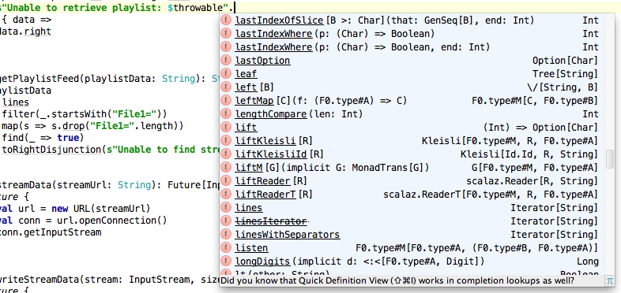

Noel Markham
libraryDependencies += "org.scalaz" %% "scalaz-core" % "7.0.6"
import scalaz._
import Scalaz._
That's it.
.option on boolean types:
scala> val boolT = 6 < 10
boolT: Boolean = true
scala> val boolF = 6 > 10
boolF: Boolean = false
scala> boolT.option("corrie")
res0: Option[String] = Some(corrie)
scala> boolF.option("emmerdale")
res1: Option[String] = None
Easier to read (in my opinion) than:
scala> if(boolT) Some("corrie") else None
res2: Option[String] = Some(corrie)
.parseXXX on String types:
scala> "6".parseInt
res3: scalaz.Validation[NumberFormatException,Int] = Success(6)
scala> "corrie".parseBoolean
res4: scalaz.Validation[IllegalArgumentException,Boolean] =
Failure(java.lang.IllegalArgumentException: For input string: "corrie")
(scalaz.Validation is a bit like Either)
The return of the ternary operator:
scala> boolT ? "corrie" | "emmerdale"
res5: String = corrie
(Note the pipe separator rather than colon)
.allPairs on List types:
scala> List(1, 2, 3, 4).allPairs
res6: List[(Int, Int)] = List((1,2), (2,3), (3,4), (1,3), (2,4), (1,4))
.some on everything:
scala> val corrie = "corrie".some
corrie: Option[String] = Some(corrie)
scala> case class Money(amount: Int, currency: String)
defined class Money
scala> Money(3, "GBP").some
res3: Option[Money] = Some(Money(3,GBP)) .fold on Option types:
scala> corrie.fold(-1)(str => str.length)
res14: Int = 6
Also called a catamorphism.
The first parameter list is for the None case.
The second is a function for the type in the Some case.
Both parameter lists return the same type.
This is total.
No need for pattern matching. See this blog post for more.
There are plenty more.
Have a poke around in the source, or in IntelliJ:
A typeclass allows ad-hoc polymorphism.
Think of it as adding your own interface to someone else's class.
Scalaz provides plenty of useful type classes...
... and instances for them.
First, a trait for defining order:
trait Ord[T] {
def compare(a: T, b: T): Boolean
}
Next, an Ord instance for a specific type:
object intOrd extends Ord[Int] {
def compare(a: Int, b: Int): Boolean = a <= b
}
Now this instance can be used when necessary:
def sort[T](xs: List[T])(ord: Ord[T]): List[T] = ...
scala> sort(List(3, 2, 1))(intOrd)
res5: List[Int] = List(1, 2, 3)
By making the instance implicit, Ord can be passed automatically:
implicit object intOrd extends Ord[Int] ... // as before
def sort[T](xs: List[T])(implicit ord: Ord[T]): List[T] = ... // as before
As long as the implicit is in scope, the Ord instance is propagated automatically:
scala> sort[Int](List(4, 3, 6, 1, 7))
res4: List(1, 3, 4, 6, 7)
If there is no implicit in scope at compile time, then it won't even compile:
scala> sort[String](List("z", "y", "x", "w")
<console>:28: error: could not find implicit value for parameter ord: Ord[String]
(This example lifted from Martin Odersky's paper: Type Classes as Objects and Implicits)
If this is new/daunting/confusing, take a look at Java's Comparator interface and its uses.
Scalaz defines many type classes, including:
scala> "hello" === "world"
res3: Boolean = false
scala> Some("corrie") === "corrie"
<console>:14: error:
could not find implicit value for parameter F0: scalaz.Equal[java.io.Serializable]
It doesn't even compile
Type safety FTW!
Why is the compiler searching for Equal[Serializable]?
A Functor is something that can be mapped:
def addSix[F[_]](toAdd: F[Int])(implicit mapper: Functor[F]): F[Int] = {
mapper.map(toAdd)(_ + 6)
}
scala> addSix(10.some)
res0: Option[Int] = Some(16)
scala> addSix(List(10))
res1: List[Int] = List(16)
scala> addSix(List(10, 11, 12, 13))
res2: List[Int] = List(16, 17, 18, 19)
The Monad typeclass definition in Scalaz is effectively:
trait Monad[F] { self =>
def point[A](a: => A): F[A]
def bind[A, B](fa: Future[A])(f: (A) => F[B]): F[B]
def flatMap[B](f: A => F[B]) = bind(self)(f)
def >>=[B](f: A => F[B]) = bind(self)(f)
def map[A,B](fa: F[A])(f: A => B) = bind(fa)(a => point(f(a)))
}
If you have map and flatMap, you can use the for comprehension.
My experience with monads:
for comprehensions is confusing.List monad is quite a confusing place to start.A => M[B], most other things slot into place easily.The Monoid typeclass definition in Scalaz is effectively:
trait Monoid[F] {
def zero: F
def append(f1: F, f2: => F): F
def |+|(f1: F, f2: => F): F = append(f1, f2)
}
A Monoid is a structure with an identity element and an associative binary operation
Associative:
a + (b + c)
is the same as
(a + b) + c
Addition, multiplication and string concatenation, amongst others, are all associative binary operations
Identity element:
When an element is used with the identity element in an associative binary operation, the operation returns the original element unchanged.
For addition, this is zero:
6 + 0 === 6
For multiplication, this is one:
6 * 1 === 6
For string concatenation, this is an empty string:
"corrie".concat("") === "corrie"
What do you think the identity operation is for the binary associative operation Integer.min?
Integer.min(a, Integer.MAX_VALUE) === a
Types that have a Monoid typeclass can use the |+| operator:
scala> 1 |+| 2 |+| 3
res6: Int = 6
scala> "coronation" |+| "street"
res3: String = coronationstreet
What do you think this returns?
scala> val m1 = Map(1 -> List("A", "B", "C"), 2 -> List("AA", "BB"))
m1: scala.collection.immutable.Map[Int,List[String]] = Map(1 -> List(A, B...
scala> val m2 = Map(1 -> List("Z"), 3 -> List("YYY"))
m2: scala.collection.immutable.Map[Int,List[String]] = Map(1 -> List(Z)...
scala> m1 |+| m2
res11: scala.collection.immutable.Map[Int,List[String]] =
Map(1 -> List(A, B, C, Z), 3 -> List(YYY), 2 -> List(AA, BB))
Define a function, collapseList, which takes a list of elements whose type has a monoid, and returns the elements appended.
For example:
scala> collapseList(List(1, 2, 3, 4, 5))
res12: Int = 15
scala> collapseList(List("a", "bb", "ccc", "dddd"))
res13: String = abbcccdddd
If a class of type M has a monoid, then a class of type Option[M] also has a monoid
scala> 1 |+| 2 |+| 3
res4: Int = 6
scala> 1.some |+| 2.some |+| 3.some
res5: Option[Int] = Some(6)
Given a monoid M, define the monoid Future[M].
For example:
scala> val futureSum = Future(1) |+| Future(2) |+| Future(3)
futureSum: scala.concurrent.Future[Int] = scala.concurrent.impl.Promise...
scala> Await.result(futureSum, 100.milliseconds)
res6: Int = 6